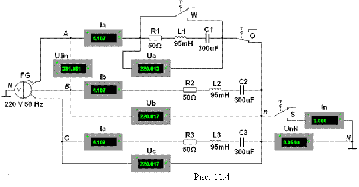

Задание 1. Запустить
лабораторный комплекс Labworks и среду
МS10 (щёлкнув мышью на команде Эксперимент меню комплекса Labworks).

Открыть файл 11.4.ms10, размещённый в папке Circuit Design Suitе 10.1, или собрать на рабочем поле среды МS10 схему (рис. 11.4) для исследования трёхфазной цепи в различных режимах её работы при
соединении источника и приёмника по схеме звезда-звезда.
С этой целью установить
следующие режимы и параметры устройств и элементов:
- ЭДС фазы Еф = 220 В и
частоту f = 50 Гц трёхфазного источника напряжения FG (рис. 11.4);
- режим АС и сопротивление RV =
· Ulin (для
измерения линейного напряжения генератора);
· Ua, Ub и Uс (ддя измерения фазных
напряжений приёмника);
· UnN (для
измерения напряжения смещения нейтрали);
- режим АС и
сопротивление RА =
· Ia, Ib и Iс (для измерения фазных токов приёмника);
· In (для
измерения тока в нейтральном проводе);
- назначить клавиши Q, W и S клавиатуры для управления ключами;
- значения сопротивлений фаз приёмника (нагрузки):
Za = Zb = Zc = R
+ jXL = [(20 + N)
+ j30], Ом для четных вариантов
N и
Za = Zb = Zc = R - jXС = [(20 + N) - j30], Ом для нечётных вариантов,
где
N - номер записи фамилии
студента в учебном журнале группы.
После проверки собранной схемы и установки параметров
элементов запустить программу
моделирования MS10 трёхфазной цепи в различных
режимах (положение ключей Q, W и S и сопротивления фаз указаны в
табл. 11.1). Занести в табл. 11.1
показания измерительных приборов для четырёхпроводной и трёхпроводной схем при
симметричной и несимметричной нагрузках, а также при обрыве и коротком замыкании
фазы а.
По данным экспериментов построить
векторную диаграмму фазных напряжений и токов (в масштабе) потребителей
четырёхпроводной цепи при несимметричной нагрузке. Фазные углы jа, jb, jc определить по формуле
.
Сравнить величину построенного вектора тока IN с
его экспериментальным значением, а также определить соотношения между
линейными и фазными напряжениями и токами при симметричной нагрузке.